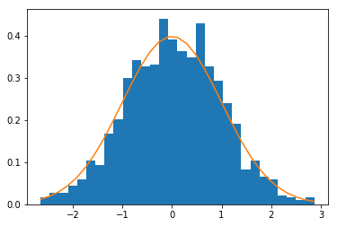

An experiment is a process that, when performed, results in one and only one of many observations. These observations are called outcomes of the experiment. The collection of all outcomes for an experiment is called a sample space.
| Experiment | Outcomes | Sample Space |
|------------------|-------------|-------------------|
| Roll a die | 1,2,3,4,5,6 | S = {1,2,3,4,5,6} |
| Tooss a coin once| Head, Tail | S = {Head, Tail} |An event, usually signified by E or any capital letter other than S, is the specification of the outcome of a trial and can consist of a single outcome or a set of outcomes. Is a collectoin of one or more of the outcomes of an experiment. These are devided in simple (includes one and only one of the final outcomes) and compound events (is a collection of more than one outcome).
Simple event: For example, the head in flipping the coin - E = {heads}
Compount event: For example, the roll of a dice which events are less than 4 - E = {1,2,3,4}The probability of an event always lies in the range 0 to 1
The sum of the probabilities of all simple events (or final outcomes) for an experiment, denoted by sum(P(E)) is always 1.
Simple probability or marginal, is the probability of a single event without consideration of any other event. With the table below we can extract the 4 possible probabilities, of P(female), P(male), P(in_favor), P(against):
import pandas as pd
from pandas import DataFrame
df = DataFrame({
'in_favor': [15, 4],
'against': [45, 36]
}, index=['male', 'female'])
df_total = DataFrame({
'in_favor': df['in_favor'].sum(),
'against': df['against'].sum()
},index=['total'])
df_table = pd.concat([df, df_total])
df_table['total'] = df_table.sum(axis=1)
# against in_favor total
# male 45 15 60
# female 36 4 40
# total 81 19 100Probabilities calculations:
Is the probability of that an event will occur given that another event has already occurred. If A and B are two events, then the conditional probability of A given B is written as P(A\|B), the probability of A given that B has already ocurred.
Given the same data compute the conditional probability P(in_favor\|male):
P(in_favor|male) = male_in_favor / total_males = 15 / 60 = .25Events that cannot occur together, for example: A = {2,4,6}, B = {1,3,5}
Two events are said to be independent if the occurence of one does not affect the probability of occurence of the other. In other words A and B are independent events if:
P(A|B) = P(A) or P(B|A) = P(B)If the occurence of one event affects the probability of the occurence of the other event, then the two events are said to be dependent evetns.
The intersection of A and B represents the collection of all outcomes that are common to both, it's is called joint probability. For example A = {1,3} and B = {1,2} = {1}
The probability of intersections of two events is calculated by P(A and B) = P(A) P(B\|A)
From the same table before what's the probability of a random selected person be male and in favor?
P(A) = 60 / 100 = .60
P(B|A) = P(in_favor|male) = 15 / 60 = .25
P(A and B) = P(A) * P(B|A) = .60 * .25 = .15Union of several simple events creates a compound event that occurs if one or more of the events occour, on the same dice A = {1,3} and B = {1,2}, A or B = {1,2,3}.
For not mutually exclusive we use this: P(A or B) = P(A) + P(B) - P(A and B)
Again from the table above find the probability of the random selected person be a female OR against.
P(A) = 40 / 100 = .40
P(B) = 81 / 100 = .81
P(against|female) = 36 / 40 = 0.9
P(A and B) = .40 * .9 = 0.36
(.40 + .81) - 0.36 = 0.85
Or 40 (total_fem) + 45 (other against) = 85Means everything in the sample space that is not that event. The complement of event A is written as ~A and is read as "not A" or "A complement", if on a dice roll A = {1,2}, ~A = {3,4,5,6}.
The equation to calculate the probability for it is: ~P(A) = 1 - P(A)
For example, in a groups of 5000 adults, 3500 are in favor of stricter gun control law, 1200 are against such laws, and 300 have no opinion. A is the event that this adult is in favor of stricter gun control law. What is the complementary event of A?
P(A) = 3500/5000 = .70
~P(A) = 1 - .70 = .30
A, B = set([1,2]), set([1,3])
# Union
print(A & B)
{1}
# Intersection
print(A | B)
{1, 2, 3}
# Complement
space = {1,2,3,4,5,6}
print(space - A)
{3, 4, 5, 6}Are all possible ways elements in a set can be arranged. If a set consists of the elements (a,b,c) then the permutations sets are: (a,b,c) (a,c,b) (b,a,c) (b,c,a) (c,a,b) and (c,b,a)
import math
from itertools import permutations
print(list(permutations(['a','b','c'])))
[('a', 'b', 'c'), ('a', 'c', 'b'), ('b', 'a', 'c'), ('b', 'c', 'a'), ('c', 'a', 'b'), ('c', 'b', 'a')]
print(math.factorial(3))
6Are similar to permutations with the diference that the order of elements is not significant in combinations. Therefore (a,b,c) is the same combination as (b,a,c). So there is only one combination (a,b,c).
from itertools import combinations
list(combinations(['a', 'b', 'c'], 3))
[('a', 'b', 'c')]NOTE: Using the notation the number of permutation possible when drawing 2 elements from a set of 3 is written 3P2, and the number of combinations of 2 elements from a set of 3 is 3C2 for the set (a,b,c) 3P2 = 6, because there are 6 permutations of 2 elements drawn from a set of 3. Three combinations of 2 are possible from this set as 3C2 = 3.
The calculation of permutation for this is nPk = n! / (n-k)!.
The calculation for combinations for this is nCk = n! / k!(n -k)!
print(list(combinations(['a', 'b', 'c'], 2)))
[('a', 'b'), ('a', 'c'), ('b', 'c')]
print(list(permutations(['a', 'b', 'c'], 2)))
[('a', 'b'), ('a', 'c'), ('b', 'a'), ('b', 'c'), ('c', 'a'), ('c', 'b')]
n = 3
k = 2
# Permutation
def calc_perm(n, k):
return math.factorial(n) / math.factorial(n - k)
print(calc_perm(3, 2))
6.0
# Combination
def calc_comb(n, k):
return math.factorial(n) / (math.factorial(k) * math.factorial(n - k))
print(calc_comb(3, 2))
3.0A very cool applied problem is extracted from the book, it's called the Cookie problem. Suppose there are two bowls of cookies.
Suppose you choose one of the bowls at random, and without looking, select a cookie at random. The cookie is vanilla. What is the probability that it came from Bowl 1?
We want p(Bowl 1|vanilla) not p(vanilla|Bowl 1), the answer for this second is 30/40, and the answer would be What is the probability of get a vanilla cookie from Bowl 1. p(A|B) != p(B|A). To find the answer we can go to the Baye's theorem, find out more on the book:
P(A|B) = P(A) * p(B|A) / P(B)
P(A) = 1/2 (random bowl) = .5
P(B|A) = 30/40
P(B) = 50 / 80 (probability of get it from both bowls)
P(A|B) = (.5 * .75) / 0.625 = 0.6 for bowl 1 and 1 - .6 = .4 for bowl 2It makes sense since we have more cookies on Bowl 1, so the chance to have the cookie there is higher.
Gaussian Naive Bayes is a supervised learning algorithm based on applying the Baye's theorem with the "naive" assumption of independence between every pair of feature. It uses
import numpy as np
from sklearn.naive_bayes import GaussianNB
# Suppose vanilla cookie is represented by 1 and chocolate by 2
# lets fill the bowls
bowl_1 = list(map(lambda x: [x], ([1] * 30) + ([2] * 10)))
bowl_2 = list(map(lambda x: [x], ([1] * 20) + ([2] * 20)))
# To create the target list we fill a list with B1 for bowl_1
# and B2 for bowl_2
data = np.array(bowl_1 + bowl_2)
target = ['b1'] * 40 + ['b2'] * 40
# Training the predictor
pred = GaussianNB()
pred.fit(data, target)
# Where's my vanilla cookie came from?
print(pred.predict(1))
['b1']
# What are the probabilities?
print(pred.classes_)
['b1' 'b2']
print(pred.predict_proba(1))
[[ 0.61708042 0.38291958]]1- If I draw one card from an ordinary deck of 52 playing cards, what is the probabiliy that it will be a red card.
2- If I roll a dice once, what is the probability of getting a number lower than 5?
3- If order is not significant, how many ways are there to select a subset of 5 students from a classroom of 20?
# 20C5
n = 20
k = 5
print(calc_comb(n, k))
15504.04- If I flip a fair coin twice, what is the probability that I will get at least on head?
The probability of getting two heads of independent tosses are P(A and B) = 0.5 * 0.5 = 0.25, so we can get the complement with 1 - ~P(A and B) = 0.75
A random variable is a variable whose value is determinated by the outcome of a random experiment. A discrete variable that assumes countable values is called a discrete random variable
Conditions:
One of the two outcomes of a trial is called a success and the other a failure.
The binomial formula is: P(x) = nCx * (p**x) * (q**n-x)
import math
import scipy.stats
# Given an example, 10% of all machines manufactured by a large
# eletronic company are defective. A quality control inspetor randonmly
# selects three machines from the production line.
# What is the probability that exactly ONE of the THREE machines is
# defective?
p = .10 # p(success) - get a defective machine
q = .90 # 1 - p
n = 3 # number of trials - machines
x = 1 # number of success
three_comb_1 = math.factorial(n) / (math.factorial(x) * math.factorial(n - x))
p_x_1 = three_comb_1 * (p ** x) * (q ** (n - x))
print(p_x_1)
0.24300000000000005
# Using ScipPy
print(round(scipy.stats.binom.pmf(x, n, p), 4))
0.243
# For the other example, we have a test's question with 5 alternatives,
# just ONE is correct, which is the probability of miss TWO questions?
n = 4
x = 2
p = 4 / 5
q = 1 / 5
four_comb_2 = 6
p_x_2 = four_comb_2 * (p**2) * (q**(n-x))
print(p_x_2)
0.15360000000000007
# Using ScipPy
print(round(scipy.stats.binom.pmf(x, n, p), 4))
0.1536A continuous random variable is a random variables whose values are not countables. Because the number of values in the interval can be infinite. The probability distribution of a continuous random variable possesses the following two characteristics:
The probability that a continuous random variable x assumes a single value is always zero.
A continuous random variable x that has a normal distrubution is called a normal random variable. The charactestics for these kind of distribution is:
%matplotlib inline
import numpy
import matplotlib.pyplot as plt
# Creating standard normal distribution data
mu, sigma = 0, 1
s = np.random.normal(mu, sigma, 1000)
count, bins, ignored = plt.hist(s, 30, normed=True)
# Display histogram of distribution and PDF
plt.plot(bins, 1/(sigma * np.sqrt(2 * np.pi)) *
np.exp( - (bins - mu)**2 / (2 * sigma**2) ))
The normal distribution with a mean of 0 and a standard deviation of 1 is known as the standard normal distribution or Z distribution. The random variable that possesses the standard normal distribution is denoted by Z. The units are called z values or z scores.
Any normal distribution can be transformed to the standard normal distribution by converting the original values to standardized scores.
Converting an x Value to a z Value: For a normal random variable x, a particular value of x can be converted to its corresponding z value by using the formula:
You can use a table like:
http://math.arizona.edu/~rsims/ma464/standardnormaltable.pdf
Or numpy to help us find the probability that a X number is inside a range of two points of the curve.
# Exercises
# 1. A delivery company have measured that mean time to delivery is
# 21 minutes and the standard deviation is 7 minutes. For a random
# delivery, what is the probability of the time be in 21 - 28 minutes.
from scipy.stats import norm
mu, sigma = 21, 7
z1 = norm(mu, sigma).cdf(21)
z2 = norm(mu, sigma).cdf(28)
print("Probability %", (z2 - z1) * 100)
Probability % 34.1344746069
# 2. For a mean of 24 years and a standard deviation of 6 years, what
# is the probability of a machine long between 17.52 and 29.7 years.
mu, sigma = 24, 6
z1 = norm(mu, sigma).cdf(17.52)
z2 = norm(mu, sigma).cdf(29.7)
print((z2 - z1) * 100)
68.8872783603
mu, sigma = 126, 10
# 3. Calculate the zcore for 116, 136, 131, 141
def zscore(x, mu, sigma):
return (x - mu) / sigma
for x in [116, 136, 131, 141]:
print(zscore(x, mu, sigma))
-1.0
1.0
0.5
1.5
# What is the probability of get someone with score higher than 136.
print( norm(mu, sigma).cdf(136) - 0.5)
0.341344746069